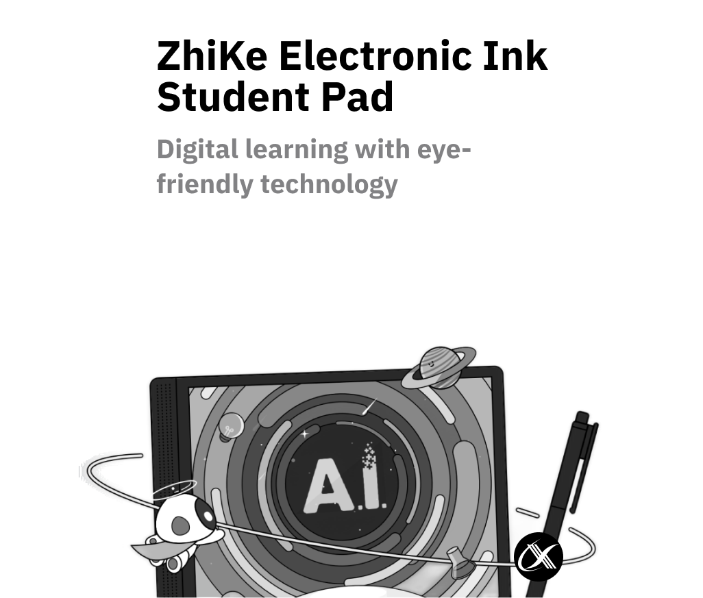
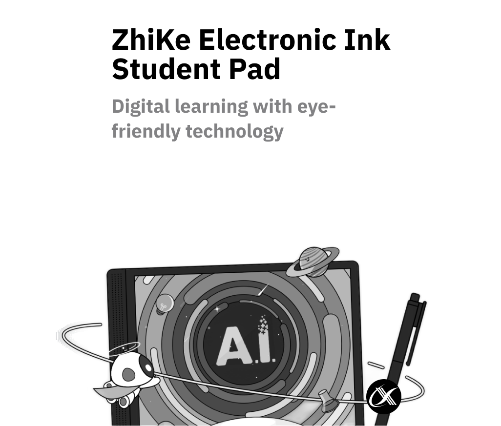
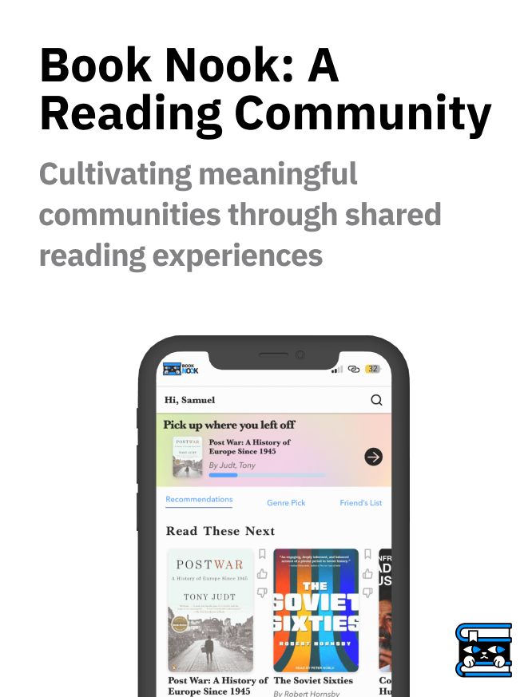
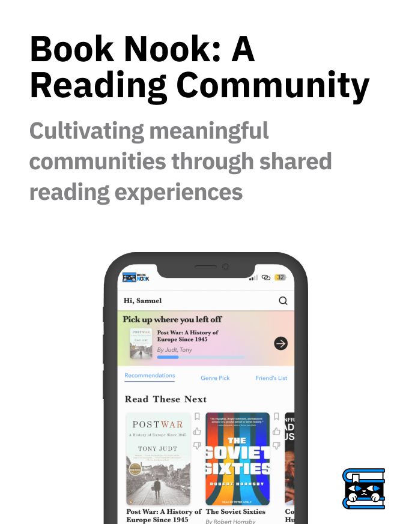
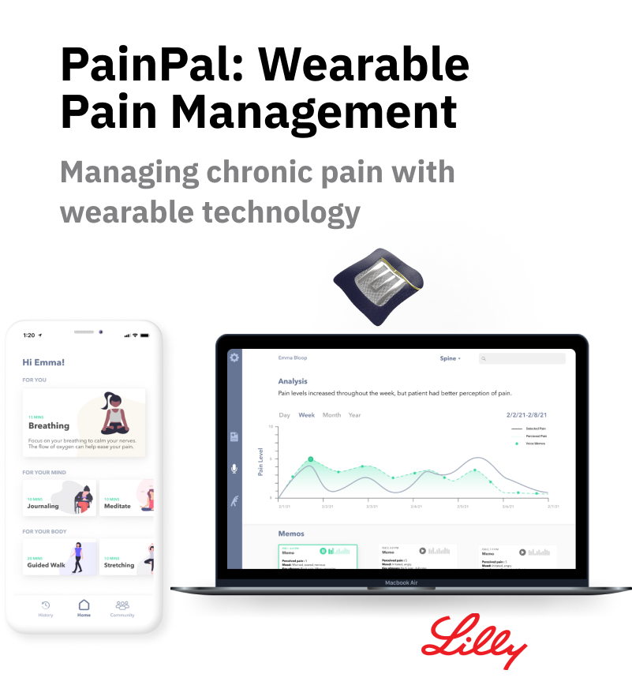
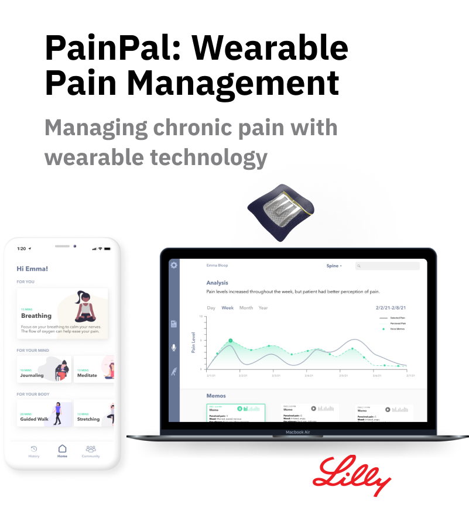
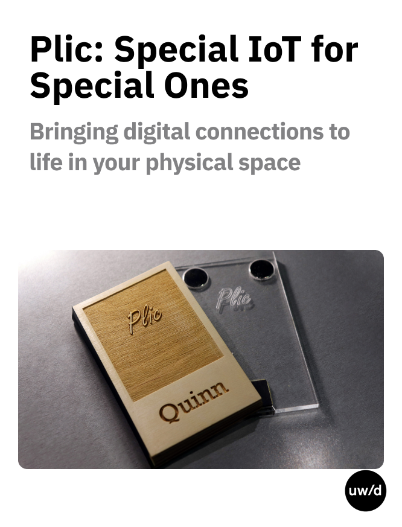
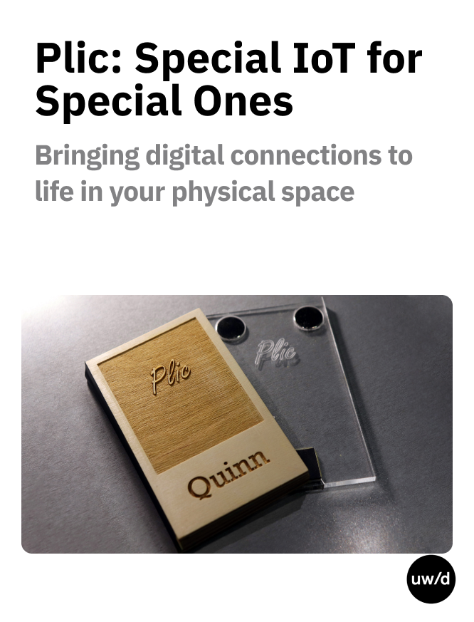
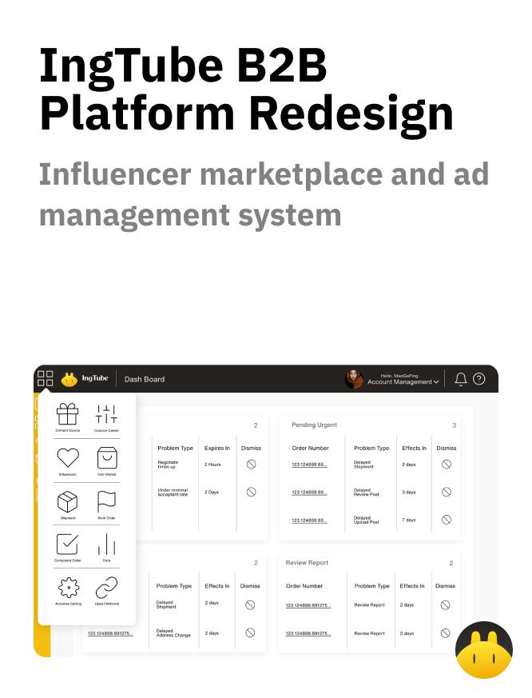
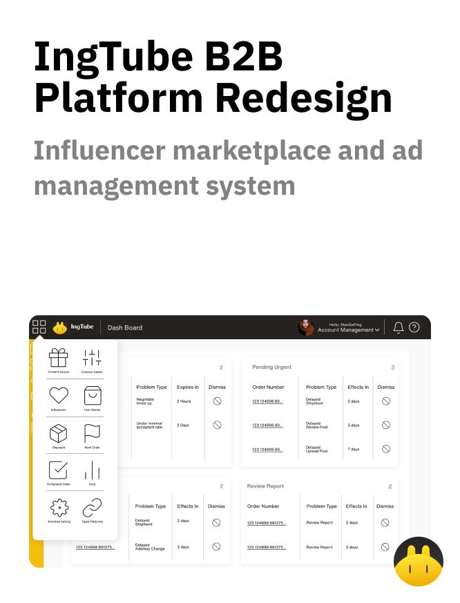

Hi, I am Jinnan Chen. I design for
Everything Experience Related


Click me to deal cards


Class Room Presentation
Challenge: Traditional presentation tools left K-12 teachers frustrated and unprepared, hindering classroom engagement.
Solution: I partnered with educators to design a presentation application focused on simplicity, flexibility, and platform-agnostic accessibility.
My Impact:
- Deep User Research: Conducted 30+ teacher interviews and surveyed 200+ to understand needs and pain points.
- Intuitive UI/UX: Redesigned the application from scratch, prioritizing ease of use and clear visual hierarchy.
- Unified Design System: Created a scalable system to ensure consistent user experience across smartboards, computers, and tablets.
Result: Teachers love the seamless experience! Increased adoption and positive feedback showcase the power of user-centered design to empower educators and transform classrooms.

ZiKe Teacher Online Community
Challenge: Ignite deeper engagement and loyalty among ZiKe teachers while addressing the isolation and lack of professional development opportunities often faced by educators in an increasingly digital landscape.
Solution: Spearheaded the design of a multi-phase online community platform tailored specifically to the needs of ZiKe educators, focusing on collaboration, resource sharing, and continuous learning.
My Impact:
- Engaged Community: Built dedicated forums and chat channels to foster peer support and best-practice sharing.
- UGC Resource Hub: Empowered teachers as content creators, enriching the platform with lesson plans, presentations, and teaching tips.
- Professional Growth: Enabled continuous learning through webinars, workshops, and online courses led by experts.
Result: The ZiKe Teacher Online Community has become a thriving ecosystem of connected and empowered educators, driving increased platform usage and brand loyalty. This project not only enhanced the ZiKe platform's value proposition but also made a meaningful impact on the professional lives of educators, fostering a culture of continuous learning and collaboration that extends beyond the digital space and into classrooms


Borderless Classroom
Lead UX Designer
User Experience Architect
Flow Analysis
Design Strategy
Challenge: Educational resource inequality between urban and rural areas in China
limits
opportunities for rural students. Traditional methods fail to address this disparity.
Solution: Developed the Borderless Classroom Product, leveraging iFlytek smartboards
to
connect classrooms in resource-rich urban areas with those in rural areas. This allows urban teachers to
deliver high-quality lessons simultaneously to multiple rural classrooms, bridging the resource gap.
My Impact:
- Led the design and implementation of the smartboard integration system, enabling seamless cross-classroom interaction.
- Collaborated with educators to develop engaging lesson plans suitable for diverse environments.
- Contributed to reducing educational inequality by providing rural students with access to top-tier resources and instruction.
Result: Pilot programs demonstrated significant improvements in rural students'
academic performance and engagement. Borderless Classrooms is poised to revolutionize education in China by
promoting equal access to quality learning experiences.
 

Eink Student Pad
Lead UX Designer
Design Strategies
User Research
Usability Testing
Challenge: China's "Double Reduction" policy challenged education companies.
Concerns
about screen time and student vision
health pushed us to create a more comprehensive solution than just E-ink screens.
Solution: The E-ink student pad with a balance of hardware and software
optimization.
It has user-friendly interface designed specifically for student needs and workflows.
My Impact:
- Led the design team to move beyond basic E-ink hardware optimization.
- Championed a user-centered approach, prioritizing student workflows.
- Developed a task-based interface to minimize distractions and enhance learning.
- Pioneered a UX-centered 0-1 product development workflow for future projects.
Result: Despite top-down requirements, I saw an opportunity to transform
tablets into
a classroom-ready tool. By leveraging user research and design theories, I created a task-based interface
that
resonated with student workflows. This tailored user experience addressed E-ink limitations while promoting
focused
learning through purpose-built features.
Our goal was not a generic tablet, but a unique learning experience. This human-centric approach aimed to improve academic outcomes by providing students with an intuitive and distraction-free tool.


mTeam Debriefing
Research
Research synthesis
Taskflow
Prototype
Usability Testing
Challenge: Medical trainees at the University of Michigan at Advanced Cardiovascular
Life Support (ACLS) training need a better feedback system on their simulation performances to improve their
skill set and pass certifications.
Solution: The Game Changer in ACLS Training - A Decade of Grooming Medical Leaders.
This product has helped improve the unique training for each medical professional. Allowing for better
feedback and training.
My Impact:
- Identified the need for a more effective feedback system through user research.
- Contributed to creating a user-centered design through user testing and iteration.
- Designed a solution that leverages VR's potential to personalize feedback and improve skill development for ACLS trainees.
Result: The final design features an engaging, holistic experience combining video,
metrics, instructor notes, insightful visualizations, and gamification to empower immersive excellence in
medical training. The system also gathers comprehensive data from each training session, providing anonymous
student feedback and identifying recurring areas of difficulty to help instructors refine their lectures and
address common student misunderstandings.


Burke Museum App
Challenge: Enhance the museum experience for families and youth at the newly renovated Burke Museum.
Solution: Developed a mobile app that offers personalized, interactive exploration of the museum's exhibits while encouraging family engagement.
My Impact:
- Conducted extensive user research with 15 groups of families, children, and staff
- Created a gamified quest system that aligns with visitors' interests and the museum's goals
- Designed an intuitive interface that minimizes screen time while maximizing learning opportunities
- Implemented a rewards system to encourage repeat visits and deeper engagement with exhibits
Result: The Burke Museum App successfully bridges the gap between interactive activities and exhibit engagement, providing a more immersive and educational experience for families. The app's personalized approach and gamification elements have increased visitor engagement and return rates.


Below
Challenge: Transform the monotonous flight experience into an engaging journey that connects passengers with the world below them.
Solution: Developed "Below," an innovative in-flight entertainment system that offers immersive, location-based experiences, bridging the gap between air travel and cultural exploration.
My Impact:
- Conducted comprehensive research including interviews, mysterious experiencing, and design workshops
- Led brainstorming sessions to generate innovative ideas for enhancing the in-flight experience
- Designed a service system map and ecosystem to visualize the project's scope and stakeholders
- Created high-fidelity prototypes for an intuitive and engaging user interface
- Developed a business model canvas to ensure commercial viability of the concept
Result: "Below" offers a unique solution that transforms air travel from mere transportation to an enriching journey. By providing real-time, location-based content and experiences, it satisfies travelers' curiosity about the places they're flying over, creating a more connected and culturally immersive flight experience.


ZiKe Student Pad Major Version Upgrade
Challenge: ZiKe's student pad offered multiple plans with varying features, requiring time-consuming homepage redesigns. Students lacked self-motivation and tools for engagement outside the curriculum.
Solution: Collaborated with a mentor to upgrade from 4.0 to 5.0, creating a flexible framework for adapting modules across plans and implementing a gamified learning system with enhanced calendar and to-do functionalities.
My Impact:
- Led the design and implementation of a flexible framework, streamlining development and maintenance
- Spearheaded the gamification system, incorporating points, themes, and avatars to boost student engagement
- Redesigned the calendar and to-do list with self-study capabilities, allowing both teacher assignments and student-set tasks
- Collaborated closely with my mentor to deliver a successful upgrade that exceeded company and user goals
Result: The upgrade significantly increased student usage and garnered positive feedback, especially for the gamification system. ZiKe now benefits from a more adaptable platform and a more engaged student community, promoting independent learning and self-motivation.


Pin Point Weather App
Challenge: Current weather apps overwhelm users with unnecessary information and lack accurate, localized forecasts. Users struggle to find relevant weather data quickly and easily.
Solution: Developed Pin Point Weather, a customizable weather forecast app that provides tailored, detailed information through an intuitive, streamlined interface.
My Impact:
- Conducted comprehensive research including heuristic analysis and user interviews to understand pain points and user needs
- Created concept maps and task flows to streamline the user experience
- Developed and iterated on wireframes based on user feedback, focusing on essential information presentation
- Designed an innovative time picker interface that aligns with users' mental models
- Crafted high-fidelity prototypes and micro-interactions using Protopie
Result: Pin Point Weather offers a more accurate, localized, and user-friendly approach to weather forecasting. By presenting information in a meaningful and visually appealing way, the app enhances users' ability to plan their daily activities effectively based on weather conditions.
 


Book Nook
Challenge: Create an innovative online community for readers that fosters meaningful social interactions around books while adhering to scientific principles of community design.
Solution: Developed Book Nook, a social reading platform that uses books as focal points for discussion, integrating features like public annotations, personalized recommendations, and local author events.
My Impact:
- Co-led a team of 5 graduate students in researching and designing the platform
- Conducted mixed-methods research, including interviews with 11 readers and a survey of 54 respondents
- Performed competitor analysis of 12 existing platforms
- Applied 7 major scientific principles to inform community feature design
- Created high-fidelity Figma prototypes incorporating key research insights
- Developed a business plan and explored market viability
Result: Book Nook was voted 'most innovative community' in the class project. The platform generated strong early-adopter interest from Literati Bookstore interviewees and survey respondents. The project is currently in the seed funding stage, with the team exploring further development and go-to-market strategies.
 


PainPal
Challenge: Help people living with chronic pain manage their condition around the clock and communicate the nuances of their pain levels with their care team.
Solution: Developed PainPal, a multi-modal solution combining a wearable biosensor patch with web and mobile interfaces to track, analyze, and report chronic pain data.
My Impact:
- Conducted research using data from the CDC and American Journal of Managed Care to create a comprehensive journey map
- Designed an innovative wearable patch using octopus-inspired technology for improved skin adhesion and comfort
- Created wireframes and high-fidelity designs for the mobile app interface
- Explored various form factors for the wearable patch to optimize user comfort and functionality
- Developed a system to compare baseline pain levels with perceived pain for more accurate reporting
Result: PainPal offers a comprehensive solution for chronic pain management, combining cutting-edge wearable technology with intuitive digital interfaces. The system provides users and healthcare providers with more accurate, nuanced pain data, potentially improving treatment outcomes and quality of life for those living with chronic pain.
 


Plic
Challenge: Sponsored by Eli Lily and Company. Create a physical product that reminds users of their important contacts in a noticeable yet unobtrusive way, transforming the often utilitarian nature of digital contact lists into meaningful interactions.
Solution: Developed Plic, a small, wooden device that opens like a book, featuring a video-chat screen on one side and a mirror with a camera on the other. Each Plic is paired with a specific contact, allowing users to place multiple devices around their home for easy access to their closest connections.
My Impact:
- Conducted comprehensive research including outreach questionnaires and contextual inquiries to identify user needs and pain points
- Led ideation sessions resulting in over 60 ideas, which were then refined through a structured down-selection process
- Facilitated participatory design workshops to gain valuable user insights and iterate on the product concept
- Designed and prototyped the final Plic device, including its book-like form factor and transparent charging dock
- Integrated user feedback to create a product that seamlessly fits into users' daily lives and spaces
Result: Plic transforms how users interact with their closest contacts, providing a physical representation of digital connections. By placing these devices in meaningful locations around the home, Plic creates a more personal and immediate way to connect with loved ones, bridging the gap between digital convenience and emotional significance.


City Health Dashboard Redesign
Challenge: Improve the usability and effectiveness of the City Health Dashboard, an award-winning platform that provides critical health data for over 970 U.S. cities, to better serve community leaders, policy influencers, and citizens in understanding and addressing health challenges.
Solution: Conducted a comprehensive usability review and redesign process, focusing on enhancing data comparison tools, improving navigation, optimizing data accessibility, and refining visual design.
My Impact:
- Led user interviews and surveys to gather insights from public health professionals and policymakers
- Performed heuristic evaluation to identify key usability issues in navigation, data visualization, and design systems
- Conducted usability testing to validate findings and gather additional user feedback
- Developed comprehensive recommendations for improving data comparison tools, map interactions, and information architecture
- Created high-fidelity prototypes in Figma to visualize proposed improvements and new features
Result: The redesign recommendations aim to significantly enhance the CHDB's user experience, improving data interpretation capabilities and solidifying its position as a valuable resource for exploring public health data. Our redesign are expected to make the platform more accessible and effective for its diverse user base, ultimately contributing to better-informed decision-making in public health initiatives across U.S. cities.


Beer Elf
Challenge: Create a mobile application for Beer Elf, a leading craft beer platform in China, to streamline the ordering process for bars and facilitate B2B transactions in the craft beer industry.
Solution: Developed a comprehensive mobile app that allows bars to easily browse, order, and manage their craft beer inventory from Beer Elf's extensive collection of over 200 high-quality craft beers from around the world.
My Impact:
- Designed an intuitive user interface tailored for bar owners and managers, focusing on efficient ordering processes
- Integrated product information including flavor profiles, origin, and cultural stories to aid in selection
- Implemented features to showcase Beer Elf's marketing content, including short videos, live streams, and detailed product descriptions
- Created a seamless order management system, including tracking and delivery status updates
- Incorporated Beer Elf's brand vision and mission into the app's design, emphasizing quality and customer satisfaction
Result: The Beer Elf mobile app successfully bridges the gap between craft beer suppliers and bars, streamlining the ordering process and enhancing the B2B experience. By providing detailed product information and efficient ordering capabilities, the app supports Beer Elf's mission to become China's leading craft beer trading platform, ensuring that beer enthusiasts can enjoy high-quality craft beers in bars across the country.


ZiKe Interactive Platform Redesign
Challenge: After 5 years of feature additions, the ZiKe platform had become cumbersome and intimidating, resulting in low teacher adoption rates and high churn.
Solution: Executed a comprehensive overhaul of the interaction model and user experience, prioritizing simplification, consistency, and intuitive design across all platform features and devices.
My Impact:
- Led ethnographic studies and flow analysis to identify key pain points and prioritize features
- Redesigned less-used features by applying insights from popular ones, simplifying interactions
- Created a unified experience across 50+ features and all supported devices
- Developed a streamlined UI focused on quick startup and ease-of-use with a clean, intuitive interface
- Ensured consistent experience across tablets, computers, and smart boards through cross-platform iteration
- Collaborated closely with engineering, QA, and customer success teams for seamless execution
Result: The platform redesign led to a significant 29.2% increase in active users following launch. Teacher frustration and intimidation were notably reduced, making the platform more accessible and user-friendly. Ongoing testing is being conducted to analyze and further improve usage metrics, ensuring continuous enhancement of the user experience.


Twitchi
Challenge: Improve engagement and cultivate healthy communities between Twitch video game streamers and their viewers, focusing on small streamers who have more opportunities for personal interactions.
Solution: Developed Twitchi, a customizable physical companion device that brings the Twitch viewing experience from a 2D digital space into a 3D material space, enhancing viewer engagement and streamer-viewer relationships.
My Impact:
- Conducted comprehensive research including secondary research, 16 user interviews, and card sorting exercises with streamers and viewers
- Synthesized research findings to generate key insights about relationships, engagement, personality, and growth on Twitch
- Led concept generation sessions, resulting in multiple innovative ideas to enhance the Twitch experience
- Designed Twitchi as a playful, customizable figure with changeable rings, integrating physical interactions with the digital streaming experience
- Developed unique features such as the "shake to join hype train" and exclusive emote sets to add value to the viewer experience
Result: Twitchi offers a novel way for viewers to engage with streams, collect merchandise, and feel more connected to their favorite streamers and games. By bridging the physical and digital realms, Twitchi provides a unique solution to enhance viewer engagement and strengthen streamer-viewer relationships, addressing key insights from our research about the desire for unique channel features and more direct engagement opportunities.


Apio Voice
Bridging distances with the power of voice and shared experiences
Challenge: Create a more personalized way for friends to maintain intimate connections across long distances during the pandemic, addressing the limitations of current screen-based communication methods.
Solution: Developed Apio, a voice-prominent, private social media platform that allows close friends to share updates about their daily lives through collected data and personalized voice comments.
My Impact:
- Led design efforts and research synthesis as Design Lead
- Conducted comprehensive user research including surveys and interviews to understand communication needs during social distancing
- Created multimodal prototypes for both the mobile app and physical speaker device
- Designed the visual interface and motion graphics for the Apio ecosystem
- Facilitated ideation sessions resulting in over 50 innovative concepts
- Developed user flows and interaction models for the voice-based interface
Result: Apio offers a unique solution to maintain close friendships over distance by combining voice technology, data sharing, and physical devices. The platform creates a more intimate and personalized communication experience, addressing the need for deeper connections in a world of digital interactions. The project demonstrates innovative approaches to voice UI, data privacy, and multimodal user experiences.


AI Classroom System Report
Revolutionizing smart classrooms with data-driven UX enhancements
Challenge: Analyze and improve the ZhiKe smart classroom system to create a unified ecosystem that better serves teachers and students across 6 product lines.
Solution: Conducted comprehensive user research and data analysis using MECE methodology to propose data-driven UX enhancements for the entire AI Classroom System.
My Impact:
- Led in-depth user research, including 13 interviews with over 20 teachers, complemented by quantitative data analysis from all users
- Applied MECE (Mutually Exclusive, Collectively Exhaustive) methodology to ensure thorough and structured analysis of the system
- Identified key pain points and opportunities across 6 product lines within the ZhiKe smart classroom ecosystem
- Developed data-driven UX enhancement proposals to create a more cohesive and effective learning environment
- Synthesized findings and recommendations into a comprehensive report to guide product strategy and development
Result: The AI Classroom System Report provided actionable insights and strategies to improve the ZhiKe smart classroom ecosystem, which serves over 130 million students accumulatively. The proposed enhancements aim to create a more unified, efficient, and effective learning experience for both teachers and students, positioning ZhiKe as a leader in AI-powered education technology.


Tamarind Branding
Crafting a nature-inspired identity for sustainable elegance
Challenge: Develop a comprehensive brand identity for Tamarind, reflecting themes of sustainability, eco-friendliness, and natural elegance while ensuring versatility across various applications.
Solution: Created a cohesive brand identity system including a minimalist leaf-motif logo, a carefully curated color palette, and thoughtful typography choices, all detailed in a comprehensive set of identity guidelines.
My Impact:
- Designed a distinctive logotype featuring a stylized leaf motif that conveys natural elegance and growth
- Developed a primary and secondary color palette that reinforces themes of sustainability and eco-friendliness
- Selected and paired typefaces (Consolas and Crimson Pro) to complement the brand's organic yet modern personality
- Created multiple logotype variations to ensure versatility across different applications and sizes
- Established clear guidelines for logo usage, including color variations and minimum size requirements
- Produced a comprehensive identity guidelines document to ensure consistent brand application
Result: The Tamarind branding project delivered a sophisticated, nature-inspired identity system that effectively communicates the brand's commitment to sustainability and natural products. The versatile design elements and clear guidelines enable consistent brand representation across various marketing materials and product packaging, positioning Tamarind as a premium, eco-conscious brand in its market.


Design for Participation: Tea Exhibition
Exploring participatory design through interactive tea culture experiences
Challenge: Create an interactive exhibition that explores participatory design principles through the lens of global tea culture, encouraging visitor engagement and fostering cultural understanding.
Solution: Developed a multi-phase project culminating in an experimental exhibit at the Duderstadt Center Gallery, featuring interactive tea cups, educational videos, and artistic performances.
My Impact:
- Contributed to the ideation, prototyping, and testing of participatory design pieces across multiple project phases
- Helped develop scenarios, storyboards, and user flows for digital and physical tools
- Assisted in creating and arranging 72 clay tea cups for the interactive exhibit
- Collaborated on integrating educational videos and video art pieces triggered by visitor interactions
- Participated in observing and analyzing visitor engagement with the artifacts
- Contributed to the refinement of content, prototypes, and user interactions based on exhibition findings
Result: The Design for Participation Tea Exhibition successfully engaged visitors in an interactive exploration of world tea culture, personal relationships, and memories. The project provided valuable insights into participatory design practices and user engagement, leading to plans for further refinements and a potential future exhibition. The innovative approach garnered attention, including features in "Tea as a Medium for Understanding Social Change" and an Instagram reel showcasing a related dance performance.
 


IngTube Platform
Internationalize influencer marketplace and ad management system
Challenge: Redesign IngTube's vendor front-end experience to accommodate new features and create an intuitive interface that aligns with the company's evolving business model.
Solution: Developed two distinct prototypes - one based on the original influencer-centered model and another reconceptualizing the platform as a comprehensive ad management system.
My Impact:
- Created an initial prototype that streamlined the campaign creation process for brands
- Collaborated cross-functionally to summarize product rules and reorganize data structures
- Conceptualized and designed a new model that transformed IngTube into an ad management system
- Developed flexible subsystems within the new model to accommodate future features
- Successfully presented and justified the new model to leadership and various departments
- Influenced the company's product strategy by having the new model adopted for implementation
Result: The reconceptualized ad management model was adopted by IngTube, fundamentally changing their product interaction framework. This new approach provides a more scalable and flexible platform that can easily accommodate future features and growth, positioning IngTube for long-term success in the influencer marketing industry.


ZhiKe Problem Bank Redesign
Optimizing interactive learning experiences through thoughtful UX solutions
Challenge: Address multiple usability issues in ZhiKe's problem bank system, including inefficient space utilization, inconsistent layout, and poor content visibility, while balancing the needs of different stakeholders.
Solution: Developed two comprehensive redesign proposals that addressed key issues, improved content visibility, and enhanced overall user experience for both teachers and students.
My Impact:
- Conducted a thorough analysis of existing problems, categorizing issues by their root causes and responsible departments
- Proposed two distinct design solutions that addressed space utilization, content alignment, and interaction issues
- Collaborated with visual design, interaction, resource, and courseware teams to ensure holistic problem-solving
- Designed flexible layout rules to accommodate various content types (text, images, tables) and improve readability
- Considered the impact of design changes on different use cases, including large-screen interactions
Result: The proposed redesigns offer significant improvements to ZhiKe's problem bank system, addressing longstanding usability issues and enhancing the overall learning experience. By considering various stakeholder needs and technical constraints, the solutions provide a solid foundation for implementing a more effective and user-friendly interactive learning platform.